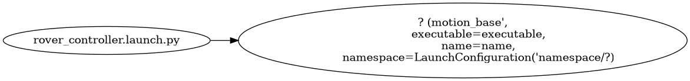

rover_base Documentation
This documentation includes package dependencies, messages, services, actions, launch files, parameter files, robot descriptions, test code, images, topic graphs, and auto-generated Doxygen diagrams.
Dependencies
Dependency |
|---|
can_msgs |
geometry_msgs |
rover_msgs |
nav_msgs |
rclcpp |
rosidl_default_generators |
rosidl_default_runtime |
std_msgs |
std_srvs |
tf2_geometry_msgs |
tf2_ros |
Launch Files
rover_controller.launch.py
Nodes launched by this file (diagram):

Node Table:
Package |
Executable |
Name |
|---|---|---|
|
? |
? |
Discovered Topics
Topic Name |
Message Type |
Publishers |
Subscribers |
|---|---|---|---|
/canbus/tx |
can_msgs::msg::Frame |
camera_lift |
|
camera_lift/status |
rover_msgs::msg::CameraLiftStatus |
camera_lift |
|
/canbus/rx |
can_msgs::msg::Frame |
camera_lift |
|
camera_lift/target_height |
std_msgs::msg::Float32 |
camera_lift |
|
/canbus/tx |
can_msgs::msg::Frame |
rover_wheel |
|
odom |
nav_msgs::msg::Odometry |
rover_wheel |
|
/cmd_vel |
geometry_msgs::msg::Twist |
rover_wheel |
|
/canbus/rx |
can_msgs::msg::Frame |
rover_wheel |
|
/canbus/tx |
can_msgs::msg::Frame |
rover_lift |
|
rover_lift/status |
rover_msgs::msg::RoverLiftStatus |
rover_lift |
|
/canbus/rx |
can_msgs::msg::Frame |
rover_lift |
|
rover_lift/target_height |
std_msgs::msg::Float64 |
rover_lift |
Parameter Files in config
config/camera_lift.yaml
# Node named 'rover_camera_lift' without namespace
rover_camera_lift:
ros__parameters:
can_tx_id: 288
can_rx_id: 544
max_height: 0.2
tolerance: 0.005
control_rate: 10.0
# Node named 'rover_camera_lift' under '/rover' namespace
rover:
rover_camera_lift:
ros__parameters:
can_tx_id: 288
can_rx_id: 544
max_height: 0.2
tolerance: 0.005
control_rate: 10.0
config/rover_lift.yaml
#rover_lift
# Parameters for node launched without a namespace
lift_control:
ros__parameters:
can_tx_id: 272 # 0x110
can_rx_base_id: 528 # 0x210
max_height: 0.16
min_height: 0.0
movement_timeout: 30.0
height_tolerance: 0.0001
default_speed: 10.0
# Parameters for node launched with namespace `/rover`
rover:
lift_control:
ros__parameters:
can_tx_id: 272
can_rx_base_id: 528
max_height: 0.16
min_height: 0.0
movement_timeout: 30.0
height_tolerance: 0.001
default_speed: 10.0
config/rover_wheel.yaml
# Node launched with name 'rover_wheel_node' without namespace
rover_wheel_node:
ros__parameters:
wheel_radius: 0.05
lx: 0.15
ly: 0.15
wheel_vel_scale: 1000.0
big_endian: false
can_id_wheel_vel: 256
can_id_control: 257
can_id_feedback: 512
use_vel_smoothing: true
accel_smooth_duration: 0.3
decel_smooth_duration: 0.3
cmd_vel_timeout: 0.5
vel_threshold: 0.0005
control_rate: 10.0
# Node launched with name 'rover_wheel_node' under namespace '/rover'
rover:
rover_wheel_node:
ros__parameters:
wheel_radius: 0.05
lx: 0.15
ly: 0.15
wheel_vel_scale: 1000.0
big_endian: false
can_id_wheel_vel: 256
can_id_control: 257
can_id_feedback: 512
use_vel_smoothing: true
accel_smooth_duration: 0.3
decel_smooth_duration: 0.3
cmd_vel_timeout: 0.5
vel_threshold: 0.0005
control_rate: 10.0
Test Files in test
#include <gtest/gtest.h>
#include <rclcpp/rclcpp.hpp>
#include <geometry_msgs/msg/twist.hpp>
#include <nav_msgs/msg/odometry.hpp>
#include <std_srvs/srv/trigger.hpp>
#include <std_srvs/srv/set_bool.hpp>
#include "rover_base/rover_wheel_node.hpp"
class RoverWheelNodeTest : public ::testing::Test {
protected:
void SetUp() override {
rclcpp::init(0, nullptr);
node = std::make_shared<RoverWheelNode>();
}
void TearDown() override {
node.reset();
rclcpp::shutdown();
}
#include <gtest/gtest.h>
#include "rover_base/rover_wheel_node.hpp"
// =============== MecanumKinematics Tests ===============
TEST(MecanumKinematicsTest, Inverse_ForwardOnly) {
MecanumKinematics kin(0.05, 0.15, 0.15);
std::array<double, 3> cmd_vel = {1.0, 0.0, 0.0}; // Forward
auto wheel_vel = kin.inverse(cmd_vel);
EXPECT_NEAR(wheel_vel[0], 20.0, 1e-6); // FL
EXPECT_NEAR(wheel_vel[1], 20.0, 1e-6); // FR
EXPECT_NEAR(wheel_vel[2], 20.0, 1e-6); // BL
EXPECT_NEAR(wheel_vel[3], 20.0, 1e-6); // BR
}
TEST(MecanumKinematicsTest, Inverse_StrafeRight) {
MecanumKinematics kin(0.05, 0.15, 0.15);
std::array<double, 3> cmd_vel = {0.0, -1.0, 0.0}; // Strafe right
auto wheel_vel = kin.inverse(cmd_vel);
Doxygen Diagrams and Class Hierarchies
-
class CameraLiftNode : public rclcpp::Node
- #include <camera_lift_node.hpp>
ROS 2 node for controlling and monitoring a camera lift mechanism.
Main ROS 2 node for controlling the camera lift.
Provides both action and topic interfaces for control, and publishes lift status.
This node handles action goals and topic commands to move the camera lift, sends CAN commands, receives feedback, and manages goal states.
Public Functions
-
CameraLiftNode()
Constructor. Initializes parameters, publishers, subscribers, and action server.
Private Functions
-
void declareParameters()
Declare all configurable parameters with default values.
Declare ROS parameters with default values.
-
void loadParameters()
Load parameters from the parameter server.
Load parameters from the ROS parameter server.
-
void validateParameters()
Validate and correct parameters if necessary.
Validate loaded parameters and reset to defaults if invalid.
Action server goal callback.
Handle new action goal requests.
Always accept the goal for further validation in handle_accepted.
- Parameters:
uuid – Goal UUID.
goal – Goal message.
uuid – [in] The goal UUID.
goal – [in] The goal message.
- Returns:
GoalResponse indicating acceptance or rejection.
- Returns:
Always ACCEPT_AND_EXECUTE.
Action server cancel callback.
Handle action goal cancellation requests.
- Parameters:
goal_handle – Handle to the goal being canceled.
goal_handle – [in] The handle to the goal being cancelled.
- Returns:
CancelResponse indicating acceptance.
- Returns:
Always ACCEPT.
Action server goal acceptance callback.
Accept and execute a valid action goal.
Validates the requested height, checks for active goals, and sends the height command if valid.
- Parameters:
goal_handle – Handle to the accepted goal.
goal_handle – [in] The handle to the accepted goal.
-
void send_height_command(double height_m)
Send a CAN command to move the camera lift to the specified height.
Send a height command to the hardware via CAN.
Converts the height from meters to millimeters and sends it in the CAN message payload.
- Parameters:
height_m – Target height in meters.
height_m – [in] Target height in meters.
CAN RX callback. Updates current height and publishes status.
Callback for CAN RX messages.
Updates the current height based on hardware feedback and publishes a status message.
- Parameters:
msg – CAN frame message.
msg – [in] The received CAN frame.
Topic subscriber callback for manual/slider control.
Callback for topic-based height commands.
Validates the requested height and starts a topic-based goal if valid.
- Parameters:
msg – Float32 message with target height (meters).
msg – [in] The received Float32 message (target height in meters).
-
void control_loop()
Main control loop. Handles action and topic goals, sends commands, and publishes feedback.
Main control loop.
Periodically checks and manages both action and topic goals, sending height commands and publishing feedback as needed.
Private Members
-
uint32_t can_tx_id_
CAN TX ID for sending height commands.
-
uint32_t can_rx_id_
CAN RX ID for receiving feedback.
-
double max_height_
Maximum allowed height (meters)
-
double tolerance_
Tolerance for goal achievement (meters)
-
double control_rate_
Control loop rate (Hz)
-
rclcpp_action::Server<CameraLiftAction>::SharedPtr action_server_
Action server.
-
std::atomic<double> current_height_ = {0.0}
Current lift height (meters)
-
std::shared_ptr<GoalHandleCameraLift> active_goal_
Currently active action goal.
-
std::mutex goal_mutex_
Mutex for goal state.
-
std::atomic<bool> topic_goal_active_ = {false}
Is a topic-based goal active?
-
std::atomic<double> topic_goal_height_ = {0.0}
Target height from topic (meters)
-
CameraLiftNode()
-
class GoalActiveGuard
- #include <rover_lift_node.hpp>
RAII helper to automatically set and clear a boolean flag.
RAII helper to manage the command_in_progress_ flag.
Used to manage the state of command_in_progress_ in a thread-safe way.
Public Functions
-
explicit GoalActiveGuard(std::atomic<bool> &flag)
Constructor. Sets the referenced flag to true.
- Parameters:
flag – Reference to the atomic flag to manage.
-
~GoalActiveGuard()
Destructor. Sets the referenced flag to false.
Private Members
-
std::atomic<bool> &flag_
Reference to the atomic flag being managed.
-
explicit GoalActiveGuard(std::atomic<bool> &flag)
-
class MecanumKinematics
- #include <rover_wheel_node.hpp>
Provides forward and inverse kinematics for a mecanum drive robot.
-
class RoverLiftNode : public rclcpp::Node
- #include <rover_lift_node.hpp>
ROS2 node for controlling and monitoring a rover’s lift via CAN bus.
This node provides an action server interface for lift commands, subscribes to CAN bus messages, and publishes status updates. It manages concurrency, parameter validation, and feedback.
Public Functions
-
RoverLiftNode()
Construct the RoverLiftNode and initialize all parameters, publishers, and subscriptions.
Construct the RoverLiftNode, initialize parameters, publishers, and subscriptions.
Private Functions
-
void declareParameters()
Declare all configurable ROS2 parameters with default values.
Declare all configurable ROS2 parameters.
-
void loadParameters()
Load parameters from the ROS2 parameter server.
-
void validateParameters()
Validate loaded parameters for correctness.
Validate loaded parameters.
- Throws:
std::runtime_error – if any parameter is invalid.
Callback to handle incoming action goals.
Handle new action goal requests.
- Parameters:
uuid – The unique identifier for the goal.
goal – The goal message.
- Returns:
Goal response (accept or reject).
Callback to handle action goal cancellation requests.
Handle action goal cancellation requests.
- Parameters:
goal_handle – The handle to the goal.
- Returns:
Cancel response (accept or reject).
Callback when a new goal is accepted. Launches execution in a new thread.
Handle accepted action goals.
- Parameters:
goal_handle – The handle to the accepted goal.
The main execution loop for a lift action goal.
Execute the lift action.
- Parameters:
goal_handle – The handle to the action goal.
-
double getAverageHeight()
Compute the average height across all lifts.
Compute the average lift height from all lifts.
- Returns:
The average height in meters.
Callback for incoming CAN bus messages.
- Parameters:
msg – The received CAN frame.
-
void publishLiftStatus()
Publish the current lift status to the appropriate topic.
Publish the current lift status.
-
void handleLiftCommand(double height)
Handle direct height commands from a topic (e.g., UI slider).
Handle direct height commands from a topic.
- Parameters:
height – The target lift height in meters.
-
bool canAcceptNewCommand()
Check if a new command can be accepted (i.e., no command in progress or the last command is finished).
Check if a new command can be accepted.
- Returns:
True if a new command can be accepted.
- Returns:
True if no command is in progress or the last command is finished.
-
void finishCommandIfArrived()
Mark the command as finished if the target height has been reached.
Mark command as finished if the target height is reached.
Private Members
-
uint32_t can_tx_id_
CAN bus transmit ID for sending commands to the lift controller.
-
uint32_t can_rx_base_id_
Base CAN bus receive ID for receiving lift state feedback.
-
double max_height_
Maximum allowable lift height (meters).
-
double min_height_
Minimum allowable lift height (meters).
-
double movement_timeout_
Timeout for reaching a target height (seconds).
-
double height_tolerance_
Acceptable error for reaching the target height (meters).
-
double default_speed_
Default lift movement speed (mm/s).
-
rclcpp::Subscription<can_msgs::msg::Frame>::SharedPtr can_rx_sub_
Subscribes to CAN frames from the bus.
-
rclcpp::Publisher<rover_msgs::msg::RoverLiftStatus>::SharedPtr lift_status_pub_
Publishes lift status messages.
-
rclcpp_action::Server<RoverLiftAction>::SharedPtr action_server_
Action server for lift commands.
-
rclcpp::Subscription<std_msgs::msg::Float64>::SharedPtr lift_command_sub_
Subscribes to direct height commands (e.g., from a UI slider).
-
std::mutex height_mutex_
Mutex to protect access to lift_heights_.
-
std::mutex last_update_mutex_
Mutex to protect access to lift_last_update_times_.
-
std::atomic<bool> command_in_progress_ = {false}
Indicates if a lift command is currently being executed.
-
double last_commanded_height_ = {0.0}
The most recent target height commanded.
-
std::mutex command_mutex_
Protects command state variables.
Private Static Attributes
-
static constexpr size_t NUM_LIFTS = 4
Number of independent lift mechanisms supported.
-
RoverLiftNode()
-
class RoverWheelNode : public rclcpp::Node
- #include <rover_wheel_node.hpp>
Main ROS 2 node for mecanum rover base control.
Private Functions
-
void declareParameters()
-
void loadParameters()
-
void validateParameters()
-
void sendWheelVelocities(const std::array<double, 4> &wheel_ang_vel)
-
void sendWheelEnable(bool enable)
-
void update()
Private Members
-
double wheel_radius_
-
double lx_
-
double ly_
-
double wheel_vel_scale_
-
bool use_vel_smoothing_
-
double accel_smooth_duration_
-
double decel_smooth_duration_
-
double cmd_vel_timeout_
-
double vel_threshold_
-
bool big_endian_
-
uint32_t can_id_wheel_vel_
-
uint32_t can_id_control_
-
uint32_t can_id_feedback_
-
double control_rate_
Control loop rate (Hz)
-
std::unique_ptr<MecanumKinematics> kinematics_
-
std::unique_ptr<VelocitySmoother> smoother_
-
std::unique_ptr<tf2_ros::TransformBroadcaster> tf_broadcaster_
-
std::array<double, 3> current_cmd_vel_
-
std::array<double, 3> target_cmd_vel_
-
double x_
-
double y_
-
double yaw_
-
bool wheels_enabled_
-
bool is_stopping_
-
bool cmd_vel_enabled_
-
bool estop_active_
-
std::mutex state_mutex_
-
void declareParameters()
-
class VelocitySmoother
- #include <rover_wheel_node.hpp>
Provides cubic smoothing for velocity transitions (accel/decel).
Public Functions
-
VelocitySmoother(double accel_duration, double decel_duration)
-
std::array<double, 3> smooth(const std::array<double, 3> ¤t, const std::array<double, 3> &target, double elapsed, bool is_stopping) const
Public Static Functions
-
static double smoothStep(double start, double end, double t, double duration)
-
VelocitySmoother(double accel_duration, double decel_duration)
-
namespace rclcpp
- file camera_lift_node.hpp
- #include “rclcpp/rclcpp.hpp”#include “rclcpp_action/rclcpp_action.hpp”#include “std_msgs/msg/float32.hpp”#include “can_msgs/msg/frame.hpp”#include “rover_msgs/action/camera_lift.hpp”#include “rover_msgs/msg/camera_lift_status.hpp”#include <atomic>#include <mutex>#include <memory>
Declaration of the CameraLiftNode class for ROS 2 camera lift control.
Typedefs
-
using CameraLiftAction = rover_msgs::action::CameraLift
-
using GoalHandleCameraLift = rclcpp_action::ServerGoalHandle<CameraLiftAction>
-
using CameraLiftAction = rover_msgs::action::CameraLift
- file rover_lift_node.hpp
- #include “rclcpp/rclcpp.hpp”#include “rclcpp_action/rclcpp_action.hpp”#include “can_msgs/msg/frame.hpp”#include “rover_msgs/action/rover_lift.hpp”#include “rover_msgs/msg/rover_lift_status.hpp”#include “rover_msgs/msg/lift_data.hpp”#include “std_msgs/msg/float64.hpp”#include <mutex>#include <array>#include <atomic>#include <thread>
Typedefs
-
using RoverLiftAction = rover_msgs::action::RoverLift
-
using GoalHandleRoverLift = rclcpp_action::ServerGoalHandle<RoverLiftAction>
-
using RoverLiftAction = rover_msgs::action::RoverLift
- file rover_wheel_node.hpp
- #include <rclcpp/rclcpp.hpp>#include <geometry_msgs/msg/twist.hpp>#include <nav_msgs/msg/odometry.hpp>#include <can_msgs/msg/frame.hpp>#include <std_srvs/srv/trigger.hpp>#include <std_srvs/srv/set_bool.hpp>#include <tf2_ros/transform_broadcaster.h>#include <array>#include <mutex>#include <memory>
ROS 2 node for mecanum rover base control with CAN bus, velocity smoothing, odometry, and safety services.
This node provides:
/cmd_vel subscriber with velocity smoothing
CAN bus communication for wheel velocities and enable/disable
Odometry publishing and TF
/enable_cmd_vel, /hard_stop, /estop, /reset_odometry services
Professional safety logic (E-stop lockout, smooth stopping, thread safety)
- Author
Your Name
- Date
2025-06-18
- file camera_lift.cpp
- #include “rover_base/camera_lift_node.hpp”#include <cmath>
Functions
-
int main(int argc, char **argv)
Main entry point.
Initializes and spins the CameraLiftNode.
-
int main(int argc, char **argv)
- file motion_faults.cpp
- #include “rclcpp/rclcpp.hpp”
Functions
-
int main(int argc, char *argv[])
-
int main(int argc, char *argv[])
- file rover_lift.cpp
- #include “rover_base/rover_lift_node.hpp”#include <cmath>#include <sstream>
Functions
-
int main(int argc, char **argv)
Main entry point for the rover lift node.
- Parameters:
argc – Argument count.
argv – Argument vector.
- Returns:
Exit code.
-
int main(int argc, char **argv)
- file rover_wheel.cpp
- #include “rover_base/rover_wheel_node.hpp”#include <tf2/LinearMath/Quaternion.h>#include <tf2_geometry_msgs/tf2_geometry_msgs.hpp>#include <cmath>
Functions
-
int main(int argc, char **argv)
-
int main(int argc, char **argv)
- dir include
- dir include/rover_base
- dir src
The above diagrams and class/function documentation are auto-generated by Doxygen and Graphviz.
camera_lift.cpp
1/**
2 * @file camera_lift_node.cpp
3 * @brief ROS 2 node for controlling a camera lift mechanism via CAN bus.
4 *
5 * This node provides both action and topic interfaces to command the camera lift
6 * to a specific height. It communicates with the hardware using CAN messages.
7 *
8 * @author Your Name
9 * @date 2025-06-20
10 */
11
12#include "rover_base/camera_lift_node.hpp"
13#include <cmath>
14
15/**
16 * @class CameraLiftNode
17 * @brief Main ROS 2 node for controlling the camera lift.
18 *
19 * This node handles action goals and topic commands to move the camera lift,
20 * sends CAN commands, receives feedback, and manages goal states.
rover_wheel.cpp
1/**
2 * @file rover_wheel_node.cpp
3 * @brief Implementation of RoverWheelNode for mecanum rover base control.
4 */
5
6#include "rover_base/rover_wheel_node.hpp"
7#include <tf2/LinearMath/Quaternion.h>
8#include <tf2_geometry_msgs/tf2_geometry_msgs.hpp>
9#include <cmath>
10
11// ==================== MecanumKinematics Implementation ====================
12
13// Constructor: Initializes kinematics with wheel radius and robot dimensions
14MecanumKinematics::MecanumKinematics(double wheel_radius, double lx, double ly)
15 : wheel_radius_(wheel_radius), lx_(lx), ly_(ly), lx_plus_ly_(lx + ly)
16{
17 // Validate input parameters
18 if (wheel_radius <= 0.0 || lx <= 0.0 || ly <= 0.0) {
19 throw std::invalid_argument("MecanumKinematics: wheel_radius, lx, ly must be positive");
20 }
motion_faults.cpp
rover_lift.cpp
1/**
2 * @file rover_lift_node.cpp
3 * @brief ROS2 node for rover lift control via CAN bus.
4 */
5
6#include "rover_base/rover_lift_node.hpp"
7#include <cmath>
8#include <sstream>
9
10/**
11 * @class GoalActiveGuard
12 * @brief RAII helper to manage the command_in_progress_ flag.
13 */
14GoalActiveGuard::GoalActiveGuard(std::atomic<bool>& flag) : flag_(flag) { flag_ = true; }
15
16GoalActiveGuard::~GoalActiveGuard() { flag_ = false; }
17
18/**
19 * @brief Construct the RoverLiftNode, initialize parameters, publishers, and subscriptions.
20 */
rover_lift_node.hpp
1#pragma once
2
3#include "rclcpp/rclcpp.hpp"
4#include "rclcpp_action/rclcpp_action.hpp"
5#include "can_msgs/msg/frame.hpp"
6#include "rover_msgs/action/rover_lift.hpp"
7#include "rover_msgs/msg/rover_lift_status.hpp"
8#include "rover_msgs/msg/lift_data.hpp"
9#include "std_msgs/msg/float64.hpp"
10#include <mutex>
11#include <array>
12#include <atomic>
13#include <thread>
14
15using RoverLiftAction = rover_msgs::action::RoverLift;
16using GoalHandleRoverLift = rclcpp_action::ServerGoalHandle<RoverLiftAction>;
17
18/**
19 * @brief RAII helper to automatically set and clear a boolean flag.
20 *
camera_lift_node.hpp
1/**
2 * @file camera_lift_node.hpp
3 * @brief Declaration of the CameraLiftNode class for ROS 2 camera lift control.
4 */
5
6#pragma once
7
8#include "rclcpp/rclcpp.hpp"
9#include "rclcpp_action/rclcpp_action.hpp"
10#include "std_msgs/msg/float32.hpp"
11#include "can_msgs/msg/frame.hpp"
12#include "rover_msgs/action/camera_lift.hpp"
13#include "rover_msgs/msg/camera_lift_status.hpp"
14#include <atomic>
15#include <mutex>
16#include <memory>
17
18using CameraLiftAction = rover_msgs::action::CameraLift;
19using GoalHandleCameraLift = rclcpp_action::ServerGoalHandle<CameraLiftAction>;
rover_wheel_node.hpp
1/**
2 * @file rover_wheel_node.hpp
3 * @brief ROS 2 node for mecanum rover base control with CAN bus, velocity smoothing, odometry, and safety services.
4 *
5 * This node provides:
6 * - /cmd_vel subscriber with velocity smoothing
7 * - CAN bus communication for wheel velocities and enable/disable
8 * - Odometry publishing and TF
9 * - /enable_cmd_vel, /hard_stop, /estop, /reset_odometry services
10 * - Professional safety logic (E-stop lockout, smooth stopping, thread safety)
11 *
12 * @author Your Name
13 * @date 2025-06-18
14 */
15
16#pragma once
17
18#include <rclcpp/rclcpp.hpp>
19#include <geometry_msgs/msg/twist.hpp>
20#include <nav_msgs/msg/odometry.hpp>